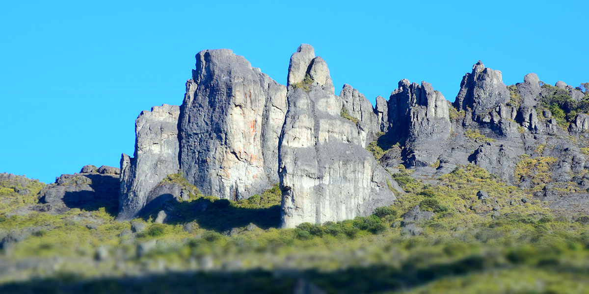
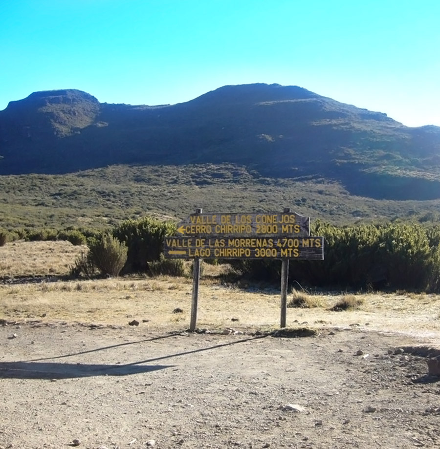
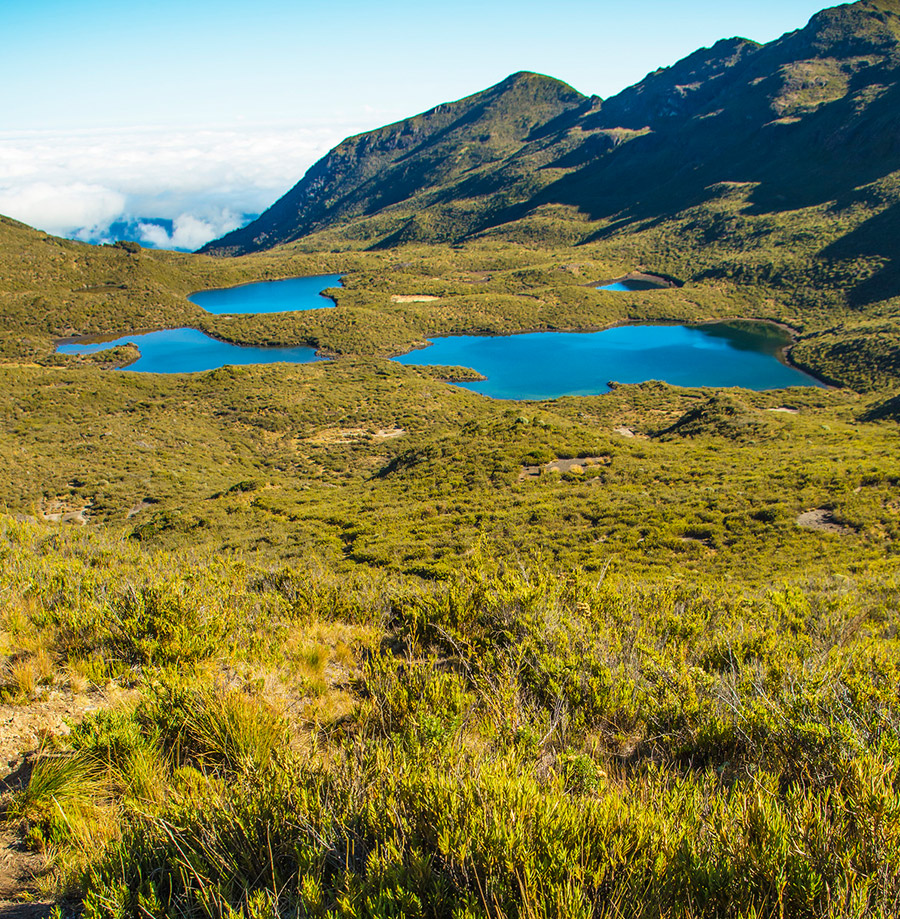
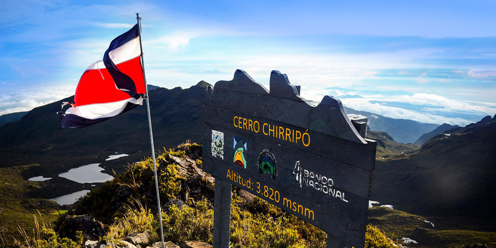
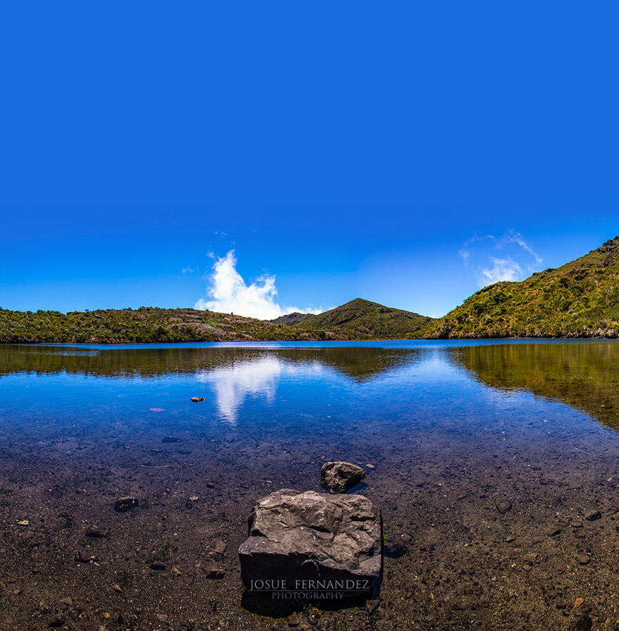
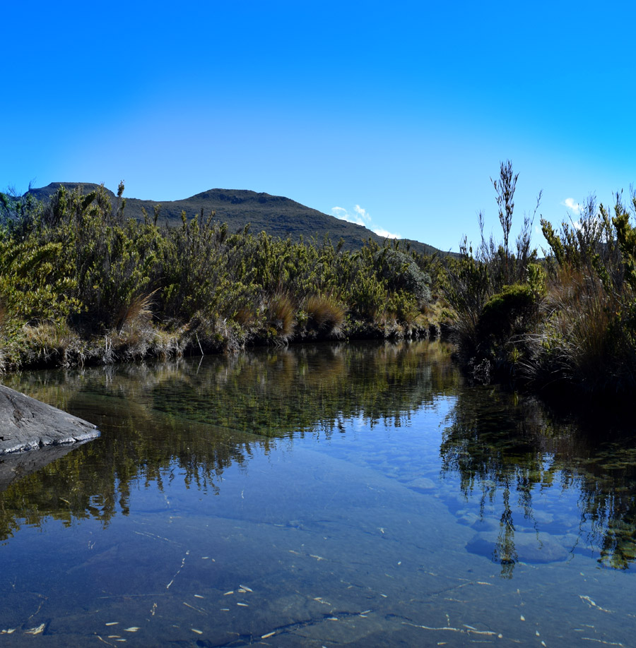
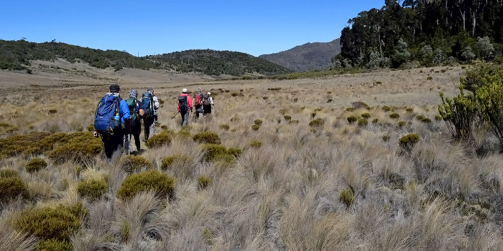

| Los Crestones |
Son formaciones rocosas, así llamadas por su semejanza con las crestas de los gallos. Surgieron por un proceso de plegamiento de la corteza terrestre; y su máxima altura es de 60 metros. Se alcanzan a ver desde el Valle de El General, sectores del litoral pacífico y desde diversos puntos de la cordillera de Talamanca. |
Están ubicados a 3715 m.s.n.m; a tan solo mil setecientos metros del albergue de Base Crestones, estación de guardaparques donde también se brindan los servicios de hospedaje, la alimentación, tienda de la naturaleza y alquiler de equipo |
 |
| Valle de los Conejos |
Es un valle que se fue formando durante el último período glacial de la Tierra, hace 25 mil años. Al irse retirando el hielo, fue dejando un valle en forma de herradura, identificado por los científicos como “circo glaciar”. |
Al deslizarse, montaña abajo, fue dándole forma y vida a lo que hoy es el río Talari, tributario del Chirripó Pacífico. Con su vegetación de páramo, este hermoso valle permite al visitante avistar el Cerro Chirripó, la Laguna Ditkevi, el Cerro Terbi y Los Crestones. De hecho, se encuentra a 2.3 km. del albergue Base Crestones (una hora de caminata) a 3500 metros de altura. |
 |
| Valle de las morrenas |
Espacio para reflexionar sobre el desplazamiento de los glaciares, que hace 25 millones de años fueron arrastrando los sedimentos que –alrededor de un conjunto de lagos- conforman un valle de morrenas. |
Está ubicado a siete kilómetros del albergue de Base Crestones (unas tres horas de ida), ubicado a una altitud de 3520 m.s.n.m. En el Valle hay cuatro lagos mayores y otros de menores dimensiones, separados por los depósitos y sedimentos glaciales. |
 |
| Cerro Chirripó |
Con una altura de 3820 metros –la máxima altitud del territorio costarricense- ofrece una vista panorámica sensacional, en la que se pueden apreciar el volcán Barú; en territorio panameño, los volcanes costarricenses Turrialba, Irazú y Poás, la costa atlántica y amplios sectores de la carretera interamericana. |
Desde la cúspide también se pueden apreciar el Cerro Urán, los valles de Los lagos y Las morrenas y los emblemáticos crestones. |
 |
| Laguna Ditkevi |
Si todo el cerro Chirripó convoca y exalta al espíritu del visitante, la laguna Ditkevi es el lugar por excelencia para la reconciliación con Dios. Así lo entendieron los aborígenes que la llamaron Ditkevi (Lugar para tener acercamiento con Dios) y así lo entienden quienes se inclinan ante su impresionante y silenciosa belleza. |
Su extensión alcanza los 12 mil metros cuadrados; su máxima profundidad, los siete metros; y en sus frías aguas cuya temperatura promedia los 14° C, es posible encontrar insectos acuáticos. |
 |
| Valle de los lagos |
Es un magnífico conjunto de tres lagos de origen glaciar, entre los cuales destaca uno por su extensión de ocho hectáreas y su profundidad de veintidós metros. Está situado a 5,3 kilómetros (menos de dos horas de caminata moderada) del albergue de Base Crestones. |
El desagüe de estos lagos es el que forma el río Chirripó Pacífico, afluente del Grande de Térraba. La temperatura promedio del agua es de 14° C. |
 |
| Sabana de los leones |
En lugar de subir, como ocurre con los otros atractivos del Parque Nacional Chirripó, para visitar la Sabana de los leones hay que bajar, desde base Crestones, por un empinado sendero de cuatro kilómetros. |
Es poco visitada debido a la dificultad de acceso, pero quienes lo hagan, se van a encontrar con un paisaje impresionante: la vista panorámica de un terreno de 160 hectáreas, de apariencia plana y poca inclinación, rodeado de robledales; acaso una nube que reposa sobre la planicie; y una conmovedora sensación de aislamiento. |
 |